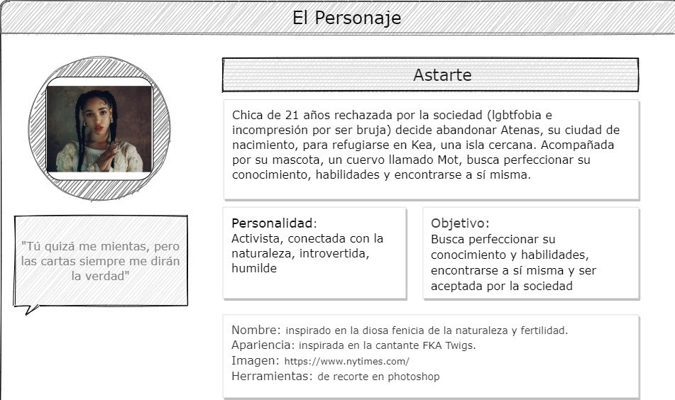

Creación y Difusión de Nuevos Contenidos Audiovisuales
Asignatura 6 créditos (optativa) 2º semestre
Lidia Peralta & Miguel Gea , 2024
Objetivo de la asignatura
- presentación, descripción y análisis de los distintos formatos y géneros audiovisuales en las redes de comunicación e información digitales, así como
- la innovación y la experimentación de técnicas específicas de generación de contenidos para las redes electrónicas.
Metodología
Fomentar la Creatividad y
la Experimentación
Organización
- Parte A-Lidia: Lunes 11-13h Aula 4
- Parte B-Miguel: Lunes 9-11h Lab 4/5
Evaluación
| Parte A | Parte B |
|---|---|
| Practica 1A - 15% Practica 2A - 15% Practica 3A - 15% |
Practica 1B - 15% Practica 2B - 15% Practica 3B - 15% |
| Memoria (personal) actividades - 10% | |
Estructura
- Parte A (Lidia Peralta) - Procesos Creativos
- Parte B (Miguel Gea) - Herramientas de storytelling digital
Contenido
1. Sociedad digital & Cultura audiovisual
- 1A Creatividad e innovación en la cultura audiovisual digital contemporánea.
- 1B Construcción de la Identidad digital y comunidades online. Metodología de producción crowdsourcing.
2. Ideación y producción digital en la red
- 2A La cultura del remix en los nuevos medios. Experiencias, proyectos e iniciativas de creación y producción audiovisual colaborativa
- 2B Ideación, prototipado e interactividad. Producción de contenidos digitales en la red.
3. Social Media / Media Art
- 3A Industrias creativas e innovación audiovisual. Modos de producción y distribución de vídeo on-line. Nuevos géneros audiovisuales en Internet
- 3B Arte digital. Narrativas interactivas. Mundos virtuales. Realidad aumentada. Formatos de entretenimiento digital
4. Aspectos legales y de accesibilidad
- 4A Políticas y procesos de accesibilidad audiovisual digital. Modelos de negocio y aspectos legales de la difusión digital de contenidos audiovisuales
- 4B Normativas y Licencias Creative Commons. Modelos de distribución digital
PRACTICAS A
EVERYTHING IS REMIX
Everything Is A Remix: KILL BILL from robgwilson.com on Vimeo
2A selfie

selfie gif de cristina rodriguez olvera
loop de victoria Gómez Díez
PRACTICAS B
1B Creación de personajes e interactivos
1B Creación de personajes e interactivos
2B - Diseño de Banners
Realidad Aumentada
Herramientas y repositorios
Bibliografía
- JENKINS, Henry (2005). Convergence Culture. Massachussets Institute of Technology Press. Cambridge.
- LESSIG, Lawrence. (2002). The Future of Ideas. The Fate of the Commons in a Connected World, New York: Vintage Books
- MANOVICH, Lev. (2001). The Language of New Media Massachussets Institute of Technology Press.
- MANOVICH, Lev. (2014) El Software toma el mando Ed. UOC
Bibliografía
- Millner, C.H. (2020) Digital Storytelling: A Creator's Guide to Interactive Storytelling. 4ª ed. Focal Press, Elsevier 2020 [FBD/004.77 MILL dig]
- Meyer, S.R. (2021) Interactive Storytelling for the Screen, Routledge [FBD/791.632 INT int]
- Lebowitz, J., Klug, C. (2012) Interactive Storytelling for Video Games, Focal Press, Elsevier. Open ScienceDirect
presentación realizada con reveal.js
disponible en github https://github.com/mgea/CDNCAv
 miguel gea, feb 2024
miguel gea, feb 2024